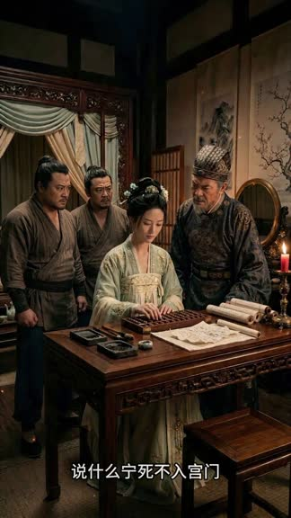
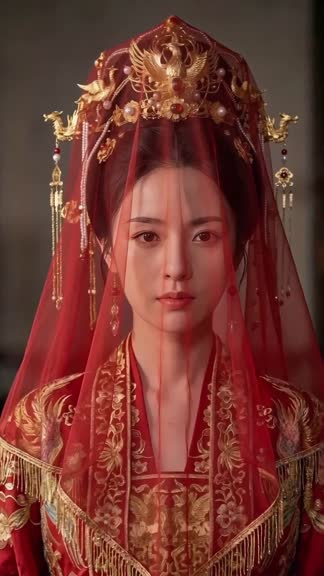
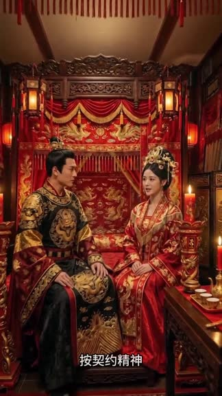

AI SHORT DRAMA · EPISODE 01
替嫁嫡妹
一部短剧，从构想到成片。
角色、分镜、声音与镜头，最终汇入一条时间线。
这里记录一次独立完成的古装 AI 短剧创作。
- 制作方式
- 独立全流程
- 主要创作工具
- Runway · 即梦
- 剪辑与后期
- 剪映



成片截帧 / AI 生成画面
THE APPROACH从素材组织到后期整合，让每个创作环节都有迹可循。
角色参考 → 分镜首帧 → 镜头素材 → 剪辑导出PRODUCTION WORKFLOW
把创意，拆成可完成的环节。
独立承担剧本与分镜、视觉素材、AI 生成、配音配乐和剪辑。以下流程依据留存材料与制作说明整理。
CHARACTER DEVELOPMENT
先让角色
有稳定的参照。
同一个角色，不同的角度与服装。多角度参考让镜头切换时的人物面部、发型与衣着有可对照的依据。
STORYBOARD TO SEQUENCE
三场戏，三组镜头组织。
从留存的首帧和片段，观察构图、景别与叙事衔接。首帧与示例镜头按场次展示，不假定逐一对应。
侯府 · 人物关系与冲突
算盘、家书与人物反应，构成开场的叙事线索。
选取 4 张留存首帧；标签沿用素材说明。
EDITING & SOUND
画面成段，
故事才开始流动。
使用剪映完成镜头剪辑、音画整合、字幕处理与成片导出。对白素材与分场导出独立保留，方便定位和回看。
右侧为素材组织示意，依据留存文件整理。
VERSION HISTORY
保留版本，让修改可回看。
三个完整导出文件可分别播放。版本名称沿用原文件用途，编号为本次归档新增。
字幕问题版
原片 1080 × 1920 / 30fps
字幕修订版
原片 1080 × 1920 / 30fps
最终成片 FINAL CUT
原片 1080 × 1920 / 60fps
网页视频统一为 720 × 1280 / 30fps 轻量预览。原片帧率不同，不据此声称预览流畅度提升；未留存逐条字幕修改日志。
PRODUCTION ARCHIVE
看成片，也看它如何被完成。
按制作环节保留中间材料，方便从画面回到素材。展示包由 99 个原始文件整理，去重后为 95 份不同内容。
浏览图片素材 角色 · 分镜 · 候选图
关于这份制作手记
本片由独立创作者完成，主要内容在 Runway 和即梦中制作，使用剪映完成剪辑与后期。画面与部分音频包含 AI 生成内容。
这是一份依据现存素材整理的案例。独立剧本文档、完整提示词、逐次生成参数与可编辑剪辑工程未包含在本档案中。